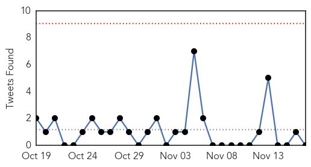

30 Day Trends
Web: 1 alerts, 0 warnings
Twitter: 0 alerts, 0 warnings
Top Articles:
- 0.896
- 'Good' mozzie virus might hold key to fighting human disease
- 0.886
- Antibiotic misconceptions named a global health crisis
- 0.866
- FACTBOX-Afghan girls struggle to get education 14 years after Taliban ousted
- 0.857
- Parents urged to give children flu vaccination
- 0.851
- A quest for better health
- 0.828
- Warning for Umrah Pilgrims against Risk of Lethal Infectious Diseases
- 0.790
- OIE scientists call for reduction of rinderpest virus stores
- 0.771
- Potable Water Shortage Plagues Pakistan
- 0.762
- Hidden Threat: The Kissing Bug and Chagas Disease
- 0.731
- Atlanta Legal Nurse Consultant At Treating Infection In The Diabetic Patients
- 0.692
- Rare TB case shows difficulty diagnosing, treating kids
- 0.691
- 11/17/15, Ashlee Halbritter: Campus Health Initiatives Director
- 0.687
- MDH: Public health leaders align to fight antibiotic resistance
- 0.685
- UC Health alerting patients about leaked medical records
- 0.682
- Some facts about HIV in the United States
- 0.681
- Rare disease proves tough to diagnose
- 0.672
- Suspended again: No work, no pay for employees who refused flu shot
- 0.661
- Some facts about HIV in the United States
- 0.654
- Early antibiotics prevents severe respiratory disease
- 0.642
- Russia confirms bomb downed its plane over Egypt, vows retribution
- 0.642
- ‘Made in France’: French thriller too close to real life
- 0.642
- Paris police failed to circulate note about terror plot days before attack
- 0.642
- France, Russia, US seek to tighten noose around IS group
- 0.616
- Charlie Sheen says he has "undetectable HIV." Here's what that means.
- 0.601
- Kerry says Syria could be 'weeks away' from transition
- 0.583
- SA makes major strides in HIV treatment and prevention
- 0.569
- Antibiotics Used in Livestock Pose Risk to Children’s Health
- 0.565
- Yemen Humanitarian Pooled Fund (YHPF) Interim Report 2015 (November 2015) - Yemen
- 0.564
- 200 WSU students being tested for TB
- 0.550
- Antibiotic Use In Animals May Pose Health Risk To Children
- 0.545
- More than 20 beds 'closed' at one of South Wales' biggest hospitals due to nursing shortages
- 0.540
- Health officials face uphill fight against STDs
- 0.536
- Even Sheen's 'Tiger Blood' Can Be HIV+
- 0.533
- Some facts about HIV in the United States - KLTV.com-Tyler, Longview, Jacksonville, Texas
- 0.533
- Some facts about HIV in the United States
- 0.528
- El Niño on Track to Be among Worst Ever, But…
- 0.521
- Oklahoma Caring Van brings free flu shots to Tulsa
- 0.517
- Doctors urge extra care as flu season arrives
- 0.515
- Hama Governor discusses with the WHO boosting health assistance
- 0.503
- San Angelo Standard Times
- 0.501
- WHO issues warning over Ethiopia climate change risks
Top Tweets:
- 0.521
- no...ya en la adolescencia porque es desde hace 4 años
Web/News Articles

Tweets
Article Locations

Article Confidences